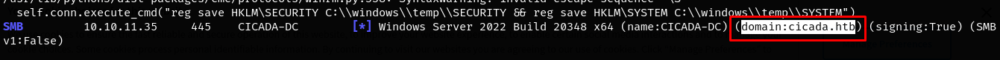

Cicada
Información maquina

| Parámetros | Características |
|---|---|
| OS | Windows |
| Dificultad | Easy |
| Creador | theblxckcicada |
| Link | Cicada |
Tema contemplados
Enumeración y reconocimiento con
nmap.
Enumeración de entornos de directorio.
Ingeniería inversa, criptografía.
Reconocimiento de servicios de una maquina Windows.
Requisitos previos
Para mantener una mayor facilidad a la hora de realizar un reconocimiento de la maquina vulnerable vamos a realizar la exportación de la IP a una variable para poder hacer mas manejable este paso.
Se realiza una prueba de conectividad lanzando una traza de ICMP al host, con lo que se comprueba que es una maquina Windows por el TTL que esta por el rango de 128.

Reconocimiento
Se realiza el primer reconocimiento con nmap, para obtener la diferente información de los puertos que tenga abiertos.
Resultados después del reconocimiento de puertos con nmap.
Nmap scan report for 10.10.11.35
Host is up, received user-set (0.13s latency).
Scanned at 2024-10-26 11:22:42 -05 for 27s
Not shown: 65523 filtered tcp ports (no-response)
Some closed ports may be reported as filtered due to --defeat-rst-ratelimit
PORT STATE SERVICE REASON
53/tcp open domain syn-ack ttl 127
88/tcp open kerberos-sec syn-ack ttl 127
135/tcp open msrpc syn-ack ttl 127
139/tcp open netbios-ssn syn-ack ttl 127
389/tcp open ldap syn-ack ttl 127
445/tcp open microsoft-ds syn-ack ttl 127
464/tcp open kpasswd5 syn-ack ttl 127
593/tcp open http-rpc-epmap syn-ack ttl 127
636/tcp open ldapssl syn-ack ttl 127
3269/tcp open globalcatLDAPssl syn-ack ttl 127
5985/tcp open wsman syn-ack ttl 127
52422/tcp open unknown syn-ack ttl 127
Read data files from: /usr/share/nmap
Se identificaron múltiples puertos abiertos, entre ellos algunos ampliamente conocidos asociados a Active Directory, lo que sugiere que este servidor Windows podría estar gestionando dicho servicio.
Como tengo muchos puertos extraigo del escaneo los puertos, con el siguiente comando y obteniendo el resultado.
cat preScan | grep "tcp" | awk -F/ '{print $1}' | tail -n 12 | tr '\n' ',' | rev | cut -c 2- | rev
# 53,88,135,139,389,445,464,593,636,3269,5985,52422
Escaneo de los servicios y las versiones que están ejecutándose por los diferentes puertos.
Reporte de salida del escaneo de todos los puertos.
Nmap scan report for 10.10.11.35
Host is up (0.14s latency).
PORT STATE SERVICE VERSION
53/tcp open domain Simple DNS Plus
88/tcp open kerberos-sec Microsoft Windows Kerberos (server time: 2024-10-26 23:49:24Z)
135/tcp open msrpc Microsoft Windows RPC
139/tcp open netbios-ssn Microsoft Windows netbios-ssn
389/tcp open ldap Microsoft Windows Active Directory LDAP (Domain: cicada.htb0., Site: Default-First-Site-Name)
| ssl-cert: Subject: commonName=CICADA-DC.cicada.htb
| Subject Alternative Name: othername: 1.3.6.1.4.1.311.25.1::<unsupported>, DNS:CICADA-DC.cicada.htb
| Not valid before: 2024-08-22T20:24:16
|_Not valid after: 2025-08-22T20:24:16
|_ssl-date: TLS randomness does not represent time
445/tcp open microsoft-ds?
464/tcp open kpasswd5?
593/tcp open ncacn_http Microsoft Windows RPC over HTTP 1.0
636/tcp open ssl/ldap Microsoft Windows Active Directory LDAP (Domain: cicada.htb0., Site: Default-First-Site-Name)
|_ssl-date: TLS randomness does not represent time
| ssl-cert: Subject: commonName=CICADA-DC.cicada.htb
| Subject Alternative Name: othername: 1.3.6.1.4.1.311.25.1::<unsupported>, DNS:CICADA-DC.cicada.htb
| Not valid before: 2024-08-22T20:24:16
|_Not valid after: 2025-08-22T20:24:16
3269/tcp open ssl/ldap Microsoft Windows Active Directory LDAP (Domain: cicada.htb0., Site: Default-First-Site-Name)
|_ssl-date: TLS randomness does not represent time
| ssl-cert: Subject: commonName=CICADA-DC.cicada.htb
| Subject Alternative Name: othername: 1.3.6.1.4.1.311.25.1::<unsupported>, DNS:CICADA-DC.cicada.htb
| Not valid before: 2024-08-22T20:24:16
|_Not valid after: 2025-08-22T20:24:16
5985/tcp open http Microsoft HTTPAPI httpd 2.0 (SSDP/UPnP)
|_http-server-header: Microsoft-HTTPAPI/2.0
|_http-title: Not Found
52422/tcp open msrpc Microsoft Windows RPC
Service Info: Host: CICADA-DC; OS: Windows; CPE: cpe:/o:microsoft:windows
Host script results:
| smb2-time:
| date: 2024-10-26T23:50:18
|_ start_date: N/A
| smb2-security-mode:
| 3:1:1:
|_ Message signing enabled and required
|_clock-skew: 7h00m00s
Service detection performed. Please report any incorrect results at https://nmap.org/submit/ .
Se puede observar que algunos servicios están apuntando a un dominio cicada.htb, por lo tanto se procedería a agregarlo a host del sistema para realizar estos reconocimientos, agregamos la IP y el dominio en /etc/hosts.
Realizar un escaneo con crackmapexec, para sacar algún dominio al que este apuntando el AD.
se encuentra el dominio que se había visto anteriormente en la exploración de los diferentes puestos que nos informaron que esta apuntando a un dominio de AD.

Probar el siguiente comando, para listar los recursos compartidos en la red del lado del servidor, para poder observar si la maquina esta compartiendo recursos en la red.
Se tiene algunos errores al ingresar e intentamos ingresar con algún usuario, en este caso vamos a intentar con guest:
crackmapexec smb 10.10.11.35 --shares -u '' -p ''
crackmapexec smb 10.10.11.35 --shares -u 'guest' -p ''

Seguimos enumerando algunos servicios con smbclient para el dominio de cicada.htb
Al analizar con smbclient, encontramos dos directorios para analizar que se ven interesantes, los cuales son DEV, HR.
Enumeramos los directorios de DEV y HR para mirar si encontramos algo interesante.
Como se puede observar para DEV no tenemos permiso para ingresar, pero para HR, encontramos un archivo Notice from HR.txt

Descargamos el archivo Notice from HR.txt y observamos su contenido.
El contenido del archivo contiene la siguiente información:
Dear new hire!
Welcome to Cicada Corp! We're thrilled to have you join our team. As part of our security protocols, it's essential that you change your default password to something unique and secure.
Your default password is: Cicada$M6Corpb*@Lp#nZp!8
To change your password:
1. Log in to your Cicada Corp account** using the provided username and the default password mentioned above.
2. Once logged in, navigate to your account settings or profile settings section.
3. Look for the option to change your password. This will be labeled as "Change Password".
4. Follow the prompts to create a new password**. Make sure your new password is strong, containing a mix of uppercase letters, lowercase letters, numbers, and special characters.
5. After changing your password, make sure to save your changes.
Remember, your password is a crucial aspect of keeping your account secure. Please do not share your password with anyone, and ensure you use a complex password.
If you encounter any issues or need assistance with changing your password, don't hesitate to reach out to our support team at support@cicada.htb.
Thank you for your attention to this matter, and once again, welcome to the Cicada Corp team!
Best regards,
Cicada Corp
Se identificó una credencial por defecto (Cicada$M6Corpb*@Lp#nZp!8), la cual podría ser utilizada para acceder a algún recurso del sistema.
Seguimos con la realización de encontrar mas información por parte del usuario guest, con lo que se procede a realizar un análisis con fuerza bruta para observar que se encuentra.
Se encuentra varias información y varios posibles usuarios, se agregan a una lista de usuario para poder seguir analizando y poder tener acceso al sistema.

Realizamos un filtro para obtener los usuarios que podemos utilizar en esta lista y luego realizar un ataque de fuerza bruta con estos usuarios, para mirar si se logra obtener acceso con alguno.
Se crea un listado de los posibles usuarios.
Se procederá a realizar una enumeración con los usuarios identificados, con el objetivo de obtener información adicional o identificar un usuario válido para el sondeo, utilizando la credencial por defecto encontrada.
Al realizar el escaneo encontramos que el único usuario que se logra tener un acceso por SMB es michael.wrightson
Realizamos una enumeración con la herramienta enum4linux-ng para este equipo de Windows sobre el servicio de SMB, y poder encontrar algo mas de información sobre el sistema.
Se encuentra un usuario mas en esta enumeración, usuario david.orelious y su password aRt$Lp#7t*VQ!3, con el que procedemos a averiguar en algún servicio de SMB si podemos escalar mas privilegios.
Con la herramienta de smbclient seguimos explorando si logramos acceder algún recurso compartido de DEV, que antes no logramos tener acceso.
Se logra ingresar a los archivos compartidos para el usuario y se encuentra un archivo Backup_script.ps1 que se procede a descargar a la maquina host y proceder a analizar que contiene.

En este archivo se logra obtener otro usuario que contiene también una credencial.
Ahora con esta nueva contraseña ingresada en nuestro diccionario de password, realizamos otra vez el comando crackmapexec.
Se puede observar que efectivamente este usuario y contraseña son validos para smb.

Ahora vamos a probar otro protocolo para ver si tenemos algún acceso con estos usuario y contraseñas que se encontraron.
Se logra observar que con el servicio de winrm, logramos tener un acceso al sistemas, con el usuario emily.oscars y password Q!3@Lp#M6b*7t*Vt
Ahora nos conectamos al sistema para poder ingresar al sistema con la herramienta de evil-winrm
Se ha logrado acceder a la maquina con el usuario de emily.oscars.

Obtenemos la flag del usuario respectivo.

Se lista los diferentes grupos y permisos que tiene el usuario sobre el sistemas, y los cuales nos van a servir para realizar la escalar privilegios.
Escalamiento de privilegios
Vamos a escalar privilegios, gracias a este servicio SeBackupPrivilege, y vamos a revisar la información del siguiente articulo para poder escalar privilegios hackingarticlesse utiliza los siguiente comandos para poder sacar el sam del sistema y el system.
Después de ejecutar estos los comandos me quedan dos archivos donde contengo la información del sistema.
Ahora se procede a pasar los archivos generados a la maquina host para proceder a analizar la información de cada archivo.
Se enviar los archivo samR y systemR desde Windows a la maquina host.
Se realiza la explotación con impacket para ver lo archivos que fueron copiados y revisar que contienen, pero va hacer en LOCAL.
Con esa información miramos que obtenemos los hash NTLM, pero lo interesante es que obtenemos el Hash NTLM del usuario Administrator.

Ahora con el hash NTLM y utilizando evil-winrm con la parte del hash LM la usamos para conectarnos a la cuenta del usuario Administrator.
Se ha logrado acceder a la maquina con el usuario Administrator, obteniendo los altos privilegios sobre la maquina, utilizando la técnica de pass-the-hash.
La flag al finalizar la escalación de privilegios.
Finalización de la maquina Cicada por KrozFu